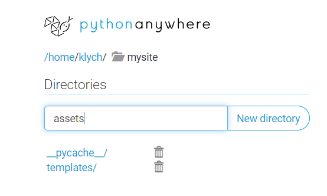
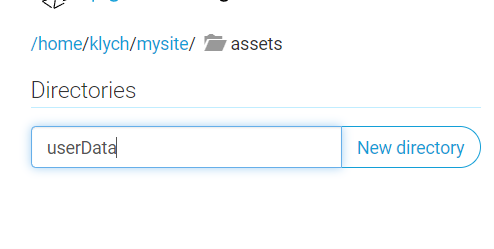
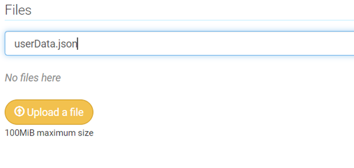
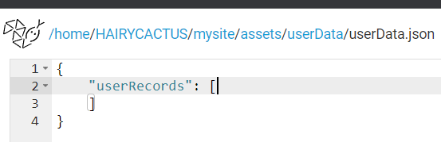

JSON
Okay, we can finally start typing out the python scripts to work with JSON. First of all, we need to create the actual JSON file, to do that, go to the “mysite” folder, and in it, create a folder called “assets”. In it, create a folder called “userData”.


And finally, inside the “userData” folder, create a file called “userData.json”.

Okay, here is where it gets a bit weird. The way JSON stores data is using objects. We know that we want to save a lot of email addresses, right? But we want to keep them linked to the forename and surname data. So, we need to create an object instance that will hold the email, forename and surname for each person who left their details. So, if we want to keep a lot of object instances, we need to create an object, which will hold an array of objects, which in turn will hold the object instances with the user data, the code inside the JSON should looks like this:

Objects are defined by curly braces, and arrays are defined by square brackets. Here, we have an object, in which a “userRecords” array is present. As you can see, the array is empty right now, but that is okay, we will now create a script which will use the data from the text fields on out capture form HTML page and store it in the JSON file as objects.